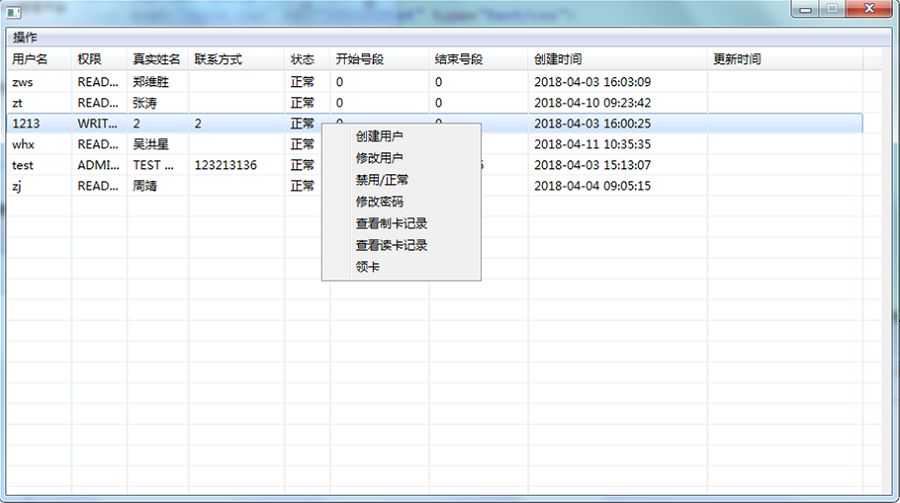

用户管理
首先选择[主窗口]->[用户管理]选项卡，然后会弹出用户管理窗口，如下图所示。

用户管理窗口右键，即可看到右键菜单，如下图所示。
创建用户
选择鼠标右键菜单中的[创建用户]选项，弹出创建用户窗口，填写用户信息，点击[确定]按钮创建新用户，如下图所示。
修改用户
鼠标选中要修改的用户，点击鼠标右键，选择菜单中的[修改用户]选项，弹出更新用户窗口，填写需要修改的用户信息，点击[确定]按钮修改用户，如下图所示。
禁用/正常
鼠标选中要更改状态的用户，点击鼠标右键，选择菜单中的[禁用/正常]选项，即可更改用户状态，如下图所示。

修改密码
鼠标选中要更改密码的用户，点击鼠标右键，选择菜单中的[修改密码]选项，填写新密码，点击[确定]即可修改为新密码，如下图所示。
查看制卡记录
鼠标选中要查看制卡记录的用户，点击鼠标右键，选择菜单中的[查看制卡记录]选项，弹出该用户的制卡记录查询界面，如下图所示。
查看读卡记录
鼠标选中要查看读卡记录的用户，点击鼠标右键，选择菜单中的[查看读卡记录]选项，弹出该用户的读卡记录查询界面，如下图所示。
领卡
鼠标选中要领卡的用户（给卡用户是当前登陆系统的用户），点击鼠标右键，选择菜单中的[领卡]选项，弹出领卡界面，如下图所示。
填写所领取卡信息，点击[确定]，领卡成功，如下图所示。
领取成功后可在领卡记录查询界面查询领卡信息